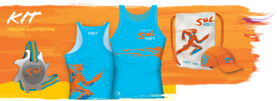
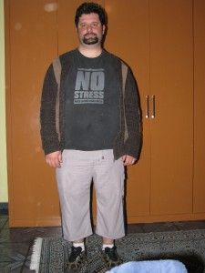

vamo, vamo, vamo…
Posts tagged desafio
Segundo aniversário do Cia. Ex-sedentário
76 years
by Alecão
in Ex-sedentário
Pois é, 2 anos se passaram desde aquela ideia maluca. O site ficou abandonado nos últimos 2 meses. Um pouco disso porque vários incidentes marcantes aconteceram com os ex-sedentários nestes últimos meses.
Mas a ideia continua viva. Muito viva mesmo, apenas não estávamos relatando.
Nesses 2 anos, fiz muitos amigos virtuais e reais. Comecei admirar a garra, força, determinação, união, solidariedade, carinho desses novos amigos.
E consegui realizar um sonho de infância que foi correr a São Silvestre. Isso para mim significou muito, pois tive olho torto de médico e mesmo obeso eu consegui correr pelo menos 10 Km dos 15 Km…
Esta vitória pessoal e o companheirismo fez mudar o meu pensamento, fez eu entender que desejando tudo é possível. Este entendimento era claro, mas mesmo assim tinha dúvida e não conseguia acreditar em mim. De repente houve um estalo na minha vida. Noites e noites (e dias também) de reflexão me ajudaram a entender ondem estava o MEU problema, detectado, tive que entrar em ação. Deixei a corrida de lado e comecei a mudar vários aspectos da minha vida pessoal. Mas principalmente comecei a mudar a minha interpretação sobre o mundo em minha volta.
Dentro destas reflexões e mudanças, resolvi primeiro ficar magro antes de voltar a correr para valer (leia-se meia e maratona). E entendi como funciona a compulsão e comecei a trabalhar a causa e não mais o efeito. Isso trouxe um resultado muito positivo, pois em menos 2 meses perdi 9 Kg e hoje já estou 4 Kg mais magro que quando corri a minha última corrida.
Meu sonho quando fiz este site era falar sobre minhas peripécias sobre deixar de ser sedentário (por isso do termo ex-sedentário). Descobri que deixar de ser sedentário, antes mesmo de forçar a barra correndo e mudar a atitude mental. O foco em corridas veio do Claudio que é amante delas. Mesmo correndo várias e gostando, tenho vontade de voltar a praticar uma paixão antiga, o ciclismo. E através deste post quero dizer que vou começar a pedalar no próximo final de semana e claro que vai ter post relatando.
Quero também ao longo deste mês, trazer para cá, os meus depoimentos sobre a minha passagem pela Equipe de Blogueiros TAEQ, aventura essa que merece um post a parte, porque ali foi o embrião de toda a minha transformação de atitude.
O ciclismo vem para ficar, mas claro que não vou abandonar as corridas, apenas diminuir o ritmo (ou melhor, voltar a ter um). E aqui já digo que três provas até o final do ano eu irei participar. E são na realidade para mim 3 festas… 3 animações… 3 reencontros com amigos… 3 vitórias.
- Maratona de Revezamento do Pão de Açúcar (5K) – Aqui é a festa da nossa equipe Cia. Ex-sedentário, onde temos o prazer de juntar os amigos e familiares dos autores deste blog. É uma festa, porque necessita do espírito de equipe para acontecer e isso é muito gratificante. No ano passado, apesar de me dizerem que eu era elite por correr patrocinado, eu queria mesmo era correr com a minha equipe, sofri pacas.
- Maratona de Curitiba (10K) – Festa Baleias. A ideia é o manto coral tomar conta, correr com os muitos amigos que fiz durante esta jornada. é uma festa porque ser Baleias é viver em festa. Esta alegria me contagiou pra valer. Será minha primeira corrida em viagem. Tem toda a logística que deve ser feita com antecedência… Isso é muito louco. Estou curtindo isso.
- São Silvestre (15K) – Para fechar o ano, a melhor festa de todas. O clima é contagiante… Muita gente feliz… E neste ano que correr todo o percurso. E com isso fecharei o ano e carimbar o meu passaporte da mudança de atitude.
2012 ainda esta para ser planejado. Mas com certeza será o ano da minha estréia em meia maratona. Até lá o peso extra não existirá mais e correr será algo tranquilo para mim.
Quanto ao ciclismo… Apenas vontades ainda não materializadas em planejamento. Quero voltar a pedalar aos poucos e quem sabe conseguir romper a barreira dos 100 Km em um único dia, que já consegui uma vez em minha vida e quero superá-la.
Mais um desafio
67 years
by Alecão
in Ex-sedentário
Tenho o objetivo de perder peso e ganhar quilômetros e alegrias. Dentro desse objetivo vou batendo metas após metas sempre com o foco lá no futuro.
Sexta passada acabei não treinando por preguiça. Mas no sábado fiz um treino de mais de 6 Km em 48 minutos (fiquei admirado com meu próprio desempenho). No domingo participei da festa pessoal da Andrea, apesar do rítimo de caminhada, eu me mantive o tempo todo trotando pelos 53 minutos. Ajudou bastante na musculatura, tanto que na segunda ainda sentia dores. Na segunda feira, apenas fiz uma caminhada de 30 minutos, voltando do trabalho.
Ontem mesmo, fiz minha inscrição para a XIV Troféu cidade de São Paulo Carrrefour Viver 10 Km. No ano passado eu fiz esta prova na distância de 6 Km, junto com meu sogro. Foi bem divertida e depois dela eu entrei num estado que gosto de chamar de “preparação”. Se ninguém se inscrever, vou acabar correndo sozinho… Então, vamos ao, que me sigam os bons… Vamo, vamo, vamo…
PS.: Não deixem de ler o post mais esperado da São Silvestre Baleias.
Estreia da Moça no mundo das corridas
47 years
by Alecão
in Ex-sedentário
Pois é, a Moça precisa de uma prova para se adentrar no mundo das corridas. E resolvi inscreve-la (sem ela saber) na corrida/caminhada de 5Km do Circuito Sol Net (etapa SP) que será no dia 16/01/2011.
Vou tirar um monte de foto para ela fazer um senhor post. 🙂
São Silvestre, vamo, vamo, vamo…
57 years
by Alecão
in Ex-sedentário
 Inscrição já está feita… Só falta a vergonha na cara! 🙂
Inscrição já está feita… Só falta a vergonha na cara! 🙂
18ª Maratona Pão de Açúcar de Revezamento
87 years
by Alecão
in Ex-sedentário
É pessoal, mais um desafio, participar de uma equipe de 8 pessoas na 18ª Maratona Pão de Açúcar de Revezamento.
Já tinha planos (de tanto o Claudio falar) para participar, mas acontece que este ano tenho um empurrãozinho a mais, pois estou na EQUIPE TAEQ. Convido a todos a acompanharem meus posts pelo hot-site da TAEQ.
Como você pretende encarar esse desafio?
17 years
by Alecão
in Ex-sedentário
Este desafio (5 quilometros, da maratona de revezamento do Pão de Açucar) é uma forma de voltar, de emagrecer e afastar os fantasmas que me assustam (possíveis problemas cardíacos futuros). Quando vou ao cardiologista, apesar de meus exames darem 100%, eles me colocam medo por causa do sobre-peso.
Para mim, o desafio significa o início da longevidade, dar mais uma alegria aos meus filhos e provar a mim mesmo que é possível sim conseguir quando muitos dizem o contrário.
Vacinas e Insanidade…
87 years
by Alecão
in Ex-sedentário
Hoje estou em home-office (chique não) e resolvi treinar antes de almoçar.
Estava eu congelando de frio em casa e encarar o sol na rua mais um aquecimento era mais do que necessário. Sai de casa e caminhei uma ladeirinha (nem marquei o tempo) e então comecei a trotar em uma descida. Mas então comecei a sentir o cansaço. Foi ai que lembrei que ontem de manhã tomei 2 vacinas, a contra a H1N1 e a segunda dose de anti-tétano. Estava contente porque a unica coisa que havia percebido era uma coriza de manhã. Mas no trote percebi que estava com o corpo debilitado. Fui neste trote por 8:17 minutos e então comecei a andar, parei no caixa eletrônico (que fila) e o corpo esfriou, nota mental: não interromper o treino para fazer favores. Voltei a andar em uma subida, ao todo foram 9:35 minutos andando e acabando a subida voltei a trotar até em casa. Mais 9:39 minutos. Ao todo foram 27:32 minutos (tempos precisos graças ao novo relógio, que memoriza… hehehehe).
Mas e essa “Insanidade” no título?
Calma, calma, vou falar. É que o Claudio me chamou para participar da 5º desafio da Mata Atlântica. São 7,5 Km de subida, o Claudio vai tentar correr, eu me dou por satisfeito em andar… Me acho insano de aceitar o desafio e me inscrever por impulso. Mas só assim mesmo para sair da inércia. E por isso da minha volta ao treinos. Mas acredito que com determinação conseguirei terminar a prova. Afinal temos que estabelecer objetivos realistas.
Tem mais algum insano por ai?
Saí da inércia
68 years
by Claudião
in Ex-sedentário
Estou sem tempo de escrever, mas me lembrei agora de uma história contada pelo Alecão, era sobre um sujeito folgado, aparecido, bem ao estilo do Claudião, que numa excursão para Santa Catarina, mesmo depois de ter se ferrado de verde e amarelo por causa de um ônibus errado em Registro (sem dinheiro e perdido), chegou de volta com parte da viagem já perdida, mas sem perder a pose. Assim estou eu, depois de uma depressãozinha pós sucesso nos 25km (fiquei tão feliz com o feito que esqueci de correr, menos de comer), mas estou aqui novamente botando pança, quer dizer, banca.
Aí Galera, estou de volta, pensaram que iram se ver livres demim. Estou de volta, mas não vou sacanear com nome de amigo, como fez o cara da história que ficou fazendo piadinha com o nome do amigo Gil (que era Adabagilson).
Ah, sim, o desafio, claro.
Foi dificil levantar as 05:00 horas, tenho acordado todos os dias nesse horário, mas para vir trabalhar, já para me por em movimento foi muito difícil.
Mas o fiz.
Trinta minutos de caminhada. De casa até a casa da minha sogra. Voltei de lá de carro, com o sogro.
Acabei de agendar minha próxima prova, que será no dia 20 de junho no meu amado bairro de Pirituba, pelo circuito SEME da Prefeitura.
O dia do desafio – Para mim e quem mais quiser
48 years
by Claudião
in Ex-sedentário
Eu sumi. Não corri e engordei.
Mas isso mudará amanhã, porque será o dia do desafio para mim e para quem mais desejar.
Abaixo texto tirado do site do sesc.
O Dia do Desafio, realizado no Brasil desde 1995 e coordenado no Continente Americano pelo SESC São Paulo desde 1998, foi idealizado há cerca de uma década pela ParticipAction, entidade esportiva canadense, e difundido mundialmente pela Trim & Fitness International Sport for All Association (TAFISA), de origem alemã. Este evento tem por objetivo inserir a atividade física no cotidiano das pessoas a fim de melhorar sua qualidade de vida. Sempre realizado na última quarta-feira de Maio, o evento consiste em mobilizar o maior número de participantes em torno da idéia de praticar pelo menos 15 minutos consecutivos de qualquer atividade física ou esportiva. Sem estipular restrições quanto às modalidades escolhidas, o evento privilegia aspectos fundamentais para o convívio humano como acessibilidade, envolvimento, diversão, diversidade, segurança, além de trazer benefícios para a comunidade e a saúde, o que reforça uma nova atitude. Com isso, o Dia do Desafio tornou-se, através dos anos, um símbolo do combate ao sedentarismo, e hoje milhões de participantes no Continente Americano, cidadãos comuns, assumiram o espírito humanitário do esporte e do lazer como um direito de todos, sem exceção. Quanto à metodologia, à inscrição e realização se dá oficialmente por meio das prefeituras municipais que após manifestarem seu interesse são agrupadas em 7 categorias, seguindo o critério do número oficial de habitantes. Para as cidades brasileiras, é considerado o número disponibilizado no site oficial do IBGE, censo de 2000. Para as cidades do exterior, o número oficial de habitantes é fornecido pelos próprios órgãos municipais. Após isso um sorteio eletrônico estabelece o desafio entre duas ou três comunidades da mesma categoria, que irão disputar qual delas consegue mobilizar o maior percentual de habitantes, em relação à sua população oficial. A partir dos resultados obtidos, a classificação das cidades é estabelecida pelo percentual de participação em relação ao número de habitantes. Os ganhos da cidade vencedora são a melhoria da qualidade de vida de seus habitantes e, sobretudo a disposição da comunidade para mobilizar seus cidadãos para a busca de uma vida saudável. Todas as cidades participantes recebem o Troféu de Mérito Comunitário pela realização do Dia do Desafio, e as instituições e voluntários que auxiliaram na realização do evento, em cada cidade, recebem também um Certificado de Participação, que são distribuídos a critério da coordenação local.
O meu desafio está lançado, amanhã eu direi como foi.
Sono perfeito, pra sempre!!!!!!
118 years
by Claudião
in Ex-sedentário
Para quem não recebe meus e-mails particulares. Desde a criação deste blog eu usava a assinatura de e-mail com a frase “Em busca do sono perfeito” logo acima do link para o blog.
Em dezembro eu mudei a assinatura para “Sono perfeito, pra sempre!”
É exatamente isso que eu quero para a minha vida. Ter o sono perfeito, que graças a este blog eu estou tendo desde dezembro, para sempre. É isto que eu quero. É isto que eu mereço. E é isto que eu almejo conseguir com a ajuda de vocês, deste blog, que se tornou vital para mim.
Eu digo isso porque estou num momento crucial da minha vida. Minha meta inicial era voltar a dormir como qualquer pessoa normal. Eu consegui. Mais do que isso, consegui emagrecer 30 quilos.
É a terceira vez que eu emagreço 30 quilos. E em cada uma das recaídas que eu tive, eu engordei cada vez mais. E piorei cada vez mais minha saúde. A primeira vez foi em 2002, estava eu com 107 e mantive-me com 77 quilos por quase um ano. A primeira recaída fez com que eu chegasse nos 116 quilos. Trinta a menos e eu estava correndo com 86 quilos. A segunda recaída como já disse por aqui, fez-me chegar nos incríveis 129 quilos e uma apinéia mortal que fez até ter uma amnésia de 8 horas consecutivas.
Hoje eu estou dormindo bem e pesando outros 30 quilos menos. Também faz sete meses que eu estou conseguindo correr. Sete meses de corrida. Este número me causa tremores internos, porque quando recaí em 2003 eu tinha sete meses de corrida. Em 2007, idem.
Eu não quero ter uma nova recaída só porque atingi sete meses de corrida. Eu quero continuar, eu quero mudar a minha história de vida. Eu quero correr mais sete meses, depois mais sete anos e fazer isto por toda a minha vida.
Agora é a hora da minha verdade. Agora é a hora de trilhar um caminho novo. Um caminho árduo e cruel. Já sinto o meu organismo lutando para reconquistar o peso. Já sinto, às vezes, aquela angústia que desemboca em compulsão alimentar. Eu quero fazer dos erros, acertos e dentro desta meta. Está a minha promessa de que nunca mais usarei a corrida para me autoflagelar após uma compulsão. Eu quero correr com prazer, não para aliviar qualquer culpa. Eu terei minhas compulsões. O que eu quero com a ajuda de Deus é me perdoar quando isto acontecer e sair para correr para glorificar este perdão e curtir cada passada.
O treino de sábado me deixou muito feliz. Fugiu ao planejado mas me deu prazer. Não fiquei frustrado porque não corri o longo para o qual eu vinha me preparando física e emocionalmente a semana toda. Muito pelo contrário. O planejamento pode ter ido pelo ralo. Mas a corrida não. Ela aconteceu de forma divina e me proporcionou satisfação e euforia. É isto que eu quero para a minha vida. Prazer e alegria com a corrida. O dia em que eu corro bem, fico tão feliz que consigo me comportar bem à mesa. As compulsões alimentares fazem parte da minha vida. Eu terei de ser feliz mesmo com elas. Toda vez que tentei vencê-las fui vencido. Não brigarei com elas. Um dia de cada vez com ou sem compulsão quero vir aqui e dizer que corri. Dizer que fui feliz correndo. E dizer isso muitas e muitas vezes, por muito tempo. Eu estou com medo. Mas também estou confiante de seguir enfrentando tudo isto. Eu só consegui esta terceira guinada na minha vida porque sou um otimista incorrigível que ama a vida. Mas que quer uma nova vida, que começa a partir de agora. Mantendo o peso, mantendo a motivação, sendo feliz e perseverante e daqui dez anos poder dizer que venci, de verdade. Agora eu não venci nada. Subi um degrau e há centenas de milhares na minha frente. Um por vez. Um após o outro eu subirei.
.jpg "DSC01810 (1024x576)")
.jpg "DSC01848 (1024x576)")
.jpg "DSC01892 (576x1024)")
.jpg "DSC01895 (576x1024)")
.jpg "DSC01942 (1024x576)")

.jpg "IMG_7305 (768x1024)")


{kind=link}
{kind=link}
Últimos comentários